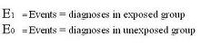
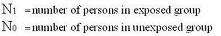

Case Control Odds Ratio
Lead Author(s): Jeff Martin, MD
Case Control Odds Ratio
Odds ratio (OR) of exposure in cases and controls is the measure of association in case-control studes
Since the case-control design starts with the cases and controls and fixes the ratio of the two by selecting one or more controls per case,
OR of exposure = OR of disease
The odds ratio is the OR of exposure,
- BUT the OR of exposure equals the OR of disease (OR we want)
To understand the OR in a case-control study we need to look at how the OR approximates the risk ratio and approximates the rate ratio.
Case-control Design Notation
To switch from the notation of a cohort to case-control design, the events (diagnoses) in a case-control study are the cases.
1 = EXPOSED and 0 = NOT EXPOSED

- Some of the cases will be discovered to have been exposed = E1
- And some of the cases will be discovered to have been unexposed = E0

With this notation we can look at how the OR estimates other ratio measures.
Capturing Events with a Case-Control Study Design
The goal of the case-control design:
- Obtain all the cases that occur during a defined time period (or a random sample of those cases)
Easily achievable if all, or nearly all the cases are diagnosed and registered:
- In a disease registry
- Kaiser’s system of record keeping.
Use a primary study base such as
- participants in a cohort
- residents of California
- members of Kaiser Permanente
Getting an unbiased estimate of this ratio is not a problem in a case-control design.
In case control design, Case Control Design: OR estimates Risk Ratio and Case Control Design: OR estimates Rate Ratio.
Rare Disease Assumption
The rare disease assumption says that if the incidence of the disease under study is very low
- the OR from a case-control study even with sampling prevalent controls approximates the risk ratio.
Although there is no absolute number, less than 10% is often given as a definition of what is meant by rare.
- Rare disease assumption if disease incidence low in unexposed and exposed (<10%).
- OR approximately equals RR
- Exposure in controls approximately equals exposure in whole cohort